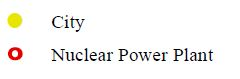

Visualizing Population Changes from the 2011 Tōhoku Earthquake and Tsunami
Matthew Brothers, Pat Dougherty, Yiting Ju
| Death |
|
| Missing |
|
| Population |
|
| Pop. Density |
|
| Population Before Earthquake |
|
| Pop. Density Before Earthquake |
|
| Population Change |
|
| Pop. Density Change |
|
